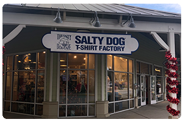
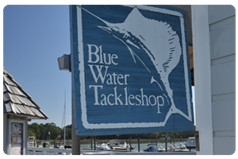

Salty Dog T-Shirt Factory-Arrow Rd
843.842.6331
Mon–Sat 9AM-8PM
Sun 9AM-6PM
The Salty Dog T-Shirt Factory at 67 Arrow Road carries our full line of Salty Dog gear. This is the store where all the magic happens! Many folks visit Arrow Road just to see our twelve-color, robotic printing press in action. You can even watch our shirts being printed through a custom window. Printing times may vary, but it’s worth the trip just to see where your Salty Dog T-Shirt’s life begins! While visiting, make sure to say, “hello” to our resident macaws! Red Bird, Green Bean and Cosmo might just say, “hello,” back! All of the Arrow Road birds can talk, just not always when you’re looking! You may also hear our smart and talkative African Grey, Remy, from our indoor aviary. She prefers a bit more solitude, but is joined by the other three birds at night.
Salty Dog T-Shirt Shop-South Beach

843.671.2232
Mon–Sun 9AM-10PM
Everyone who pays a visit to South Beach Marina Village should stop in at the South Beach Salty Dog T-Shirt Factory to get your official Salty Dog T-Shirt. The abundance of colors and styles, including the original Hanes Beefy-T in 20 shades, ensures you will find something that will fit you to a “T.” And with our special “Color of the Month” only available in-store there is always something new to check out. There are also hats, gifts and collectibles as well as “The Legend of Jake, the Salty Dog” children’s book. The South Beach store is located up the spiral stairs next to Land's End Tavern or up the stairs next to The Salty Dog Ice Cream Shop. While you’re shopping, be sure to check out local celebrities, Roscoe and Earnest. Earnest is a Yellow Naped Amazon Parrot and Roscoe is a Yellow Headed Amazon Parrot that live upstairs and are sure to greet guests with a “Hello” or “Goodbye.”
Jake's Cargo

843.671.5022
Mon-Sun 9AM-10PM
Just a hop, skip and a jump from the South Beach Salty Dog T-Shirt Factory, in the courtyard next to the South Beach Inn is Jake’s Cargo. Jake’s Cargo is a bit bigger than the T-Shirt Shop, so in addition to all of the T-shirt styles you’ll find all kinds of other Salty Dog gear, especially for your pets. Collars, leashes, toys, bandanas and more are sure to satisfy even the pickiest pets. Jake’s Cargo is also the full time home of Captain and Cherokee, the feathered friends that hang out in the courtyard trees during the day. Captain is a scarlet macaw who likes peanuts and seeing all the smiling faces at South Beach. Cherokee, a blue and gold macaw, is the youngest of the bunch and loves apples and other fresh fruit.
Salty Dog T-Shirt Factory-Tanger 2
843.837.5511
Mon-Sat 9AM-9PM
Sun 10AM-7PM
The newest addition to our Salty Dog locations, the Salty Dog T-shirt Factory is located in the area's prime shopping center, Tanger 2 Outlets, making it accessible from both Fording Island Road and Bluffton Parkway. This new location boasts a spacious showroom with plenty of room to display our most current fashions and classic favorites. The dressing rooms are large, comfortable and designed to ensure the fit is just right. The Tanger 2 T-shirt Factory also offers two features that are unique to this location. There is a Tie-Dye Station always available, so if the mood strikes, our crew can help you design and dye a one-of-a-kind memento! And, of course, we can’t forget the Doggie Deal Backroom loaded with great last chance bargains.
Blue Water Bait and Tackle Shop
843.671.3060
Mon-Sun 8AM-5PM
Blue Water Bait and Tackle Shop in South Beach Marina offers not only bait, fishing tackle, t-shirts, crabbing supplies and fishing gear, but also the most exciting charter fishing experience in the area. With a full fleet of charter boats, our experienced captains are local experts with loads of tips and tricks to increase your chances of a successful trip. In addition, South Beach Marina is the closest marina to the ocean - which means more time on the water and better odds for catching even more fish! Schedule your charter here.
Salty Dog Key West

305.294.0036
Mon-Sun 10AM-8PM
Heading South for an adventure in the Keys? Be sure to come hangout with our Salty Dog crew on Simonton St & Olivia. Loaded with official Salty Dog Key West gear, as well as all of your original Salty Dog favorites, no trip to Key West is complete without a Salty Dog visit.
Keep up with all the SD Key West excitement on the Key West site!